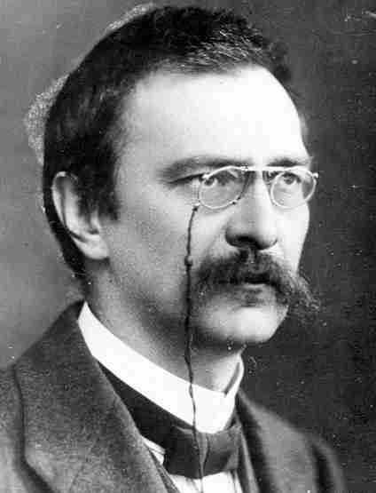
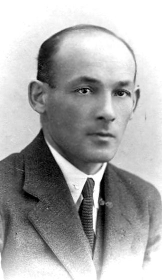
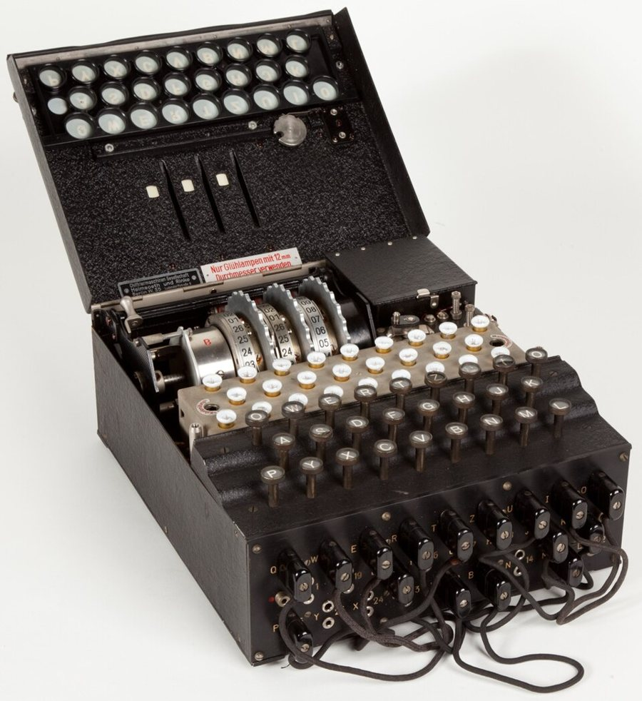
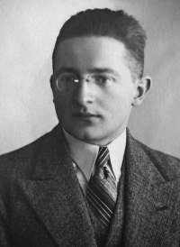
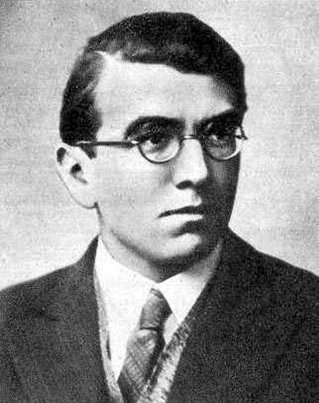

DwudziestolecieKultura i nauka II Rzeczypospolitej
Dwadzieścia lat wolności wystarczyło, by Polacy złamali szyfr Enigmy, zdobyli olimpijskie złoto, zbudowali Gdynię, a w domach zagrało radio. Prześledźmy, kto tworzył kulturę i naukę odrodzonego państwa — i jak narodziła się kultura masowa.
Pytania na dziś
- Z jakimi problemami zmagała się oświata w odrodzonej Polsce?
- Jakie osiągnięcia mieli polscy uczeni, pisarze i artyści — i kim byli?
- Czym była kultura masowa i jak zmieniła codzienne życie Polaków?
Strzałki ← → na klawiaturze przełączają etapy.
Źródła ilustracji
Fotografie i reprodukcje pochodzą z Wikimedia Commons i Wikipedii (licencje wolne lub domena publiczna). Nazwy plików:
Dwudziestolecie w dziesięciu datach
Kliknij wydarzenie, a potem rok, do którego pasuje. Nie znacie odpowiedzi? Zgadujcie — po lekcji sprawdzimy jeszcze raz.
Szkoła dla wszystkich?
Odrodzona Polska odziedziczyła trzy różne systemy szkolne i miliony ludzi, którzy nie umieli czytać ani pisać. Zbudowanie wspólnej szkoły było jednym z najważniejszych zadań państwa.
Jaki odsetek mieszkańców nie umiał czytać i pisać?
Dane z początku lat 20. dla ziem trzech dawnych zaborów. Najpierw niech klasa zgadnie, potem odsłoń wynik.
Skąd te różnice? W zaborze pruskim od dawna obowiązywał przymus szkolny, w rosyjskim — nie. Już w 1919 r. wprowadzono powszechny obowiązek szkolny dla dzieci do 14. roku życia. Według spisów analfabeci stanowili ok. 33% mieszkańców w 1921 r. i ok. 23% w 1931 r. — mimo postępów problem nie zniknął.

Szkoła a mniejszości
- ograniczyła liczbę szkół dla mniejszości narodowych,
- wprowadziła szkoły dwujęzyczne (utrakwistyczne),
- miała wzmacniać polskość — w praktyce dyskryminowała Ukraińców i Białorusinów.

Jeden system dla całego kraju
- zatarła różnice między dawnymi zaborami,
- ujednoliciła program i poziom nauczania,
- szkoły średnie pozostały płatne i elitarne.
Droga ucznia do matury
i matura
Dzieci wiejskie często chodziły do szkoły tylko 4 lata, a nie 7. Do matury w całej Polsce przystępowało rocznie zaledwie kilkanaście tysięcy osób.
Uniwersytety odrodzonego państwa
Powstały nowe uczelnie, m.in. Uniwersytet Poznański, Uniwersytet Stefana Batorego w Wilnie i Akademia Górnicza w Krakowie. Życie naukowe koordynowała Polska Akademia Umiejętności w Krakowie.
Getto ławkowe i numerus clausus
W drugiej połowie lat 30. na uczelniach nasiliły się akty antysemityzmu, inspirowane przez organizacje skrajnej prawicy (np. Młodzież Wszechpolską, ONR). Na wielu uczelniach wprowadzono getto ławkowe — Żydzi mieli siedzieć w wyznaczonych ławkach. Niektóre stosowały numerus clausus (łac. „liczba zamknięta”), ograniczając liczbę studentów danej narodowości.
Część profesorów i studentów protestowała — studenci nie-Żydzi siadali solidarnie w „żydowskich” ławkach lub stali przez cały wykład.
Nauka i technika
Najpierw niech klasa zgadnie, czym zasłynęła dana osoba — dopiero potem odwróć kartę.



Złamanie Enigmy
Niemiecka maszyna szyfrująca Enigma uchodziła za niemożliwą do złamania. W grudniu 1932 r. Marian Rejewski, matematyk z Biura Szyfrów Sztabu Głównego, odtworzył jej wewnętrzne połączenia, korzystając z matematyki — a nie, jak dotąd, z lingwistyki. Wraz z Henrykiem Zygalskim i Jerzym Różyckim przez lata odczytywał niemieckie depesze.
- 1929 — kurs kryptologii dla studentów matematyki w Poznaniu.
- 1932 — Rejewski łamie szyfr Enigmy.
- Lipiec 1939 — w Pyrach pod Warszawą Polacy przekazują wiedzę Francuzom i Brytyjczykom.
- II wojna światowa — polskie metody pomagają Brytyjczykom w Bletchley Park.
Półka z książkami
Kliknij grzbiet książki i zgadnijcie, do którego nurtu należy. Po odpowiedzi grzbiet przybierze kolor swojego nurtu — na koniec cała półka ułoży się w mapę literatury dwudziestolecia.
Sztuka, architektura, teatr i muzyka
Twórcy szukali stylu, który byłby jednocześnie nowoczesny i polski. Rozpoznajcie nurt, zanim kliknięcie podpowie odpowiedź.
Twórcy
Kultura masowa
Kultura masowa to treści tworzone dla szerokiej publiczności i rozpowszechniane przez prasę, radio i kino. Nastrój odbiornik i posłuchaj, co nadają.
Prawda czy fałsz?
Klasa głosuje, nauczyciel zaznacza odpowiedź większości.
Sprawdzian na telefonie
Uczniowie skanują kod QR i rozwiązują 15 losowych zadań: 6 × wybór ABCD, 3 × prawda/fałsz, 2 × wielokrotny wybór, kolejność wydarzeń, dopasowanie twórcy do osiągnięcia i 2 odpowiedzi wpisywane. Wynik i ocena pojawiają się od razu.
- Na ekranie wyniku tyka aktualny zegar — zrzut ekranu od kolegi od razu widać.
- Każde przełączenie aplikacji lub karty jest liczone jako „wyjście ze strony”.
- Kod kontrolny zależy od imienia, wyniku, liczby wyjść i dzisiejszej daty — wpisz dane poniżej i porównaj.
- Ponowne podejście na tym samym telefonie jest zablokowane.